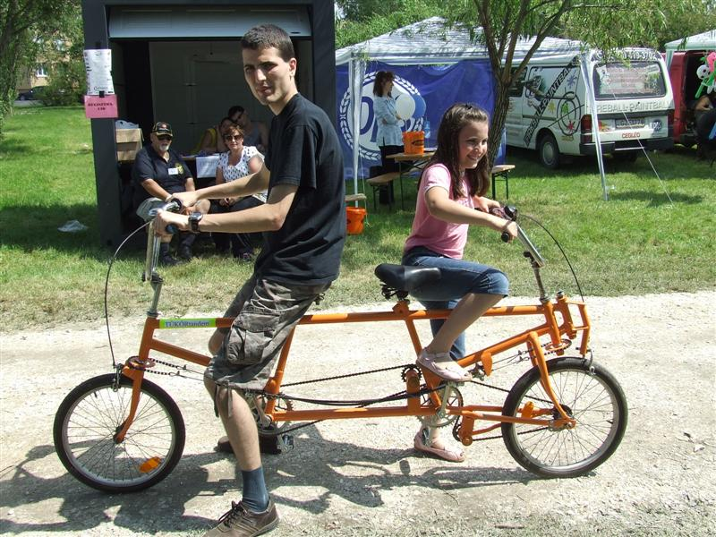

A TÜKÖRTANDEM-mel való biciklizés a haladási irány szerint hátul ülõ számára jelent különleges élményt.
A különleges láncmechanikának köszönhetõen a hátul ülõ a normál, megszokott irányban tekeri a pedálokat.
Mivel most nem ül elõtte a kormányzó személy, teljes szépségében csodálhatja a visszafelé eléje táruló kilátást.
A TÜKÖRTANDEM egy különleges tulajdonsággal is rendelkezik a megszokott hasonló tandemekhez képest, amelyek angol elnevezéssel "back to back tandem" néven szerepelnek.
A TÜKÖRTANDEM a hátsó nyeregbõl, hátrafelé haladva is kormányozható a bowdenhuzalos kormányzó mechanika segítségével.